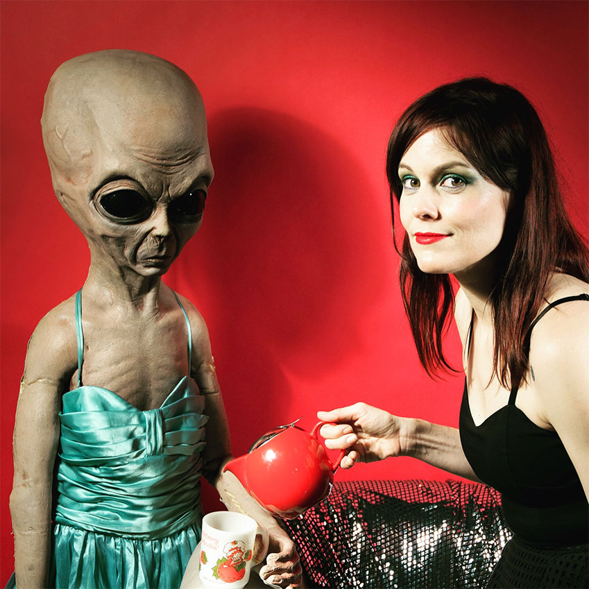

Melissa St Moore is an eccentric dream pop musician in Chicago, IL. She likes to incorporate symbolism in her songs and sometimes paint pictures with words. Her self-titled debut is available now.
A self-taught dancer, conductor of her own train, and comedienne by circumstance, St Moore creates inner and outer worlds with her creative mix of sound and vision that defies traditional genres. Her inspiration is rooted in the music and art of the 1970s in NYC. She is also influenced by Blonde Redhead, Bauhaus, Missy Elliot, and Alice Glass to name a few. As a performance artist, video antics and glitchy electronics lend themselves to high energy vocals and fun shows! Performing under the names Skates and M.Q., she has played many venues throughout LA and NYC, including a spot opening for Nina Hagen.
Melissa holds a BA from San Francisco State University and studied Film Music at UCLA with award winning composer, Elizabeth Myers, who advised her in the making of the album. Co-Producer and Engineer Jesse String (Leonard Cohen's Popular Problems) adds a catchy yet weird sensibility to the arrangements and Grammy nominated duo, The Ditty Bops, accent two tracks with atmospheric vocals & piano including on a spontaneous rendition of, "Take me Out to the Ball Game!" Her husband, Eric A. Harvey, lends a rock feel to many of the songs, with his high energy guitar playing and industrialized pedals. The album is perfect to play in your solar powered space cruise to Mars, or just play it in your car!
Melissa is currently working in design & web development and mixing it up with live performances. She is applying to design Master's programs for fall of 2018. Her next musical release will be mostly originals, for which there is already an album cover. She lives and works in Chicago, IL.
INFO

Photo: Brandon Rizzuto
Photo: Brandon Rizzuto
melissa.in.trees@me.com